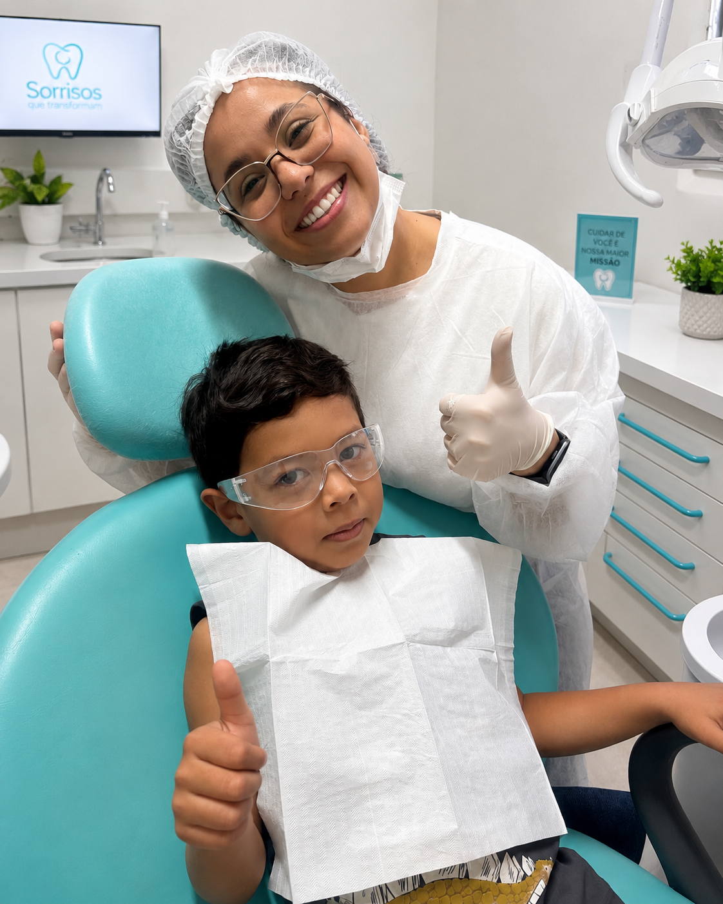
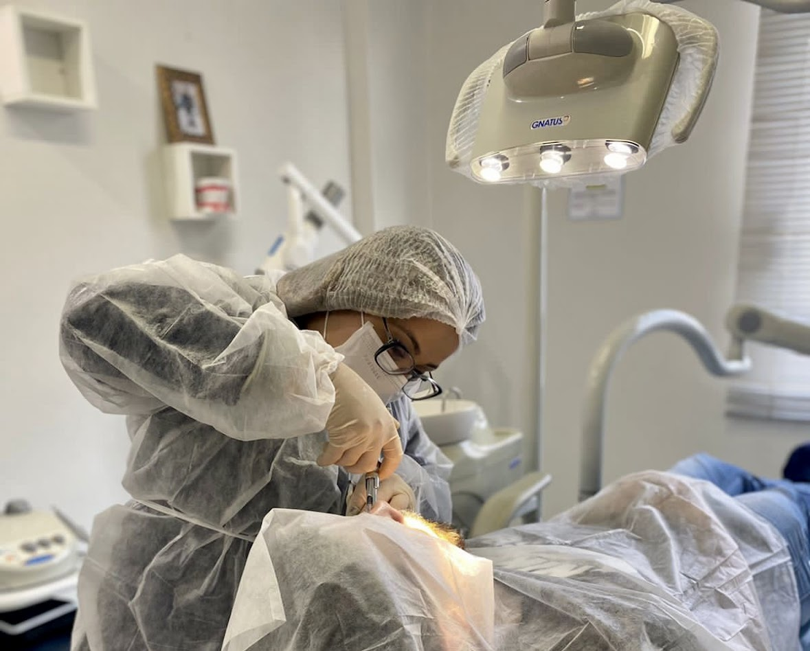
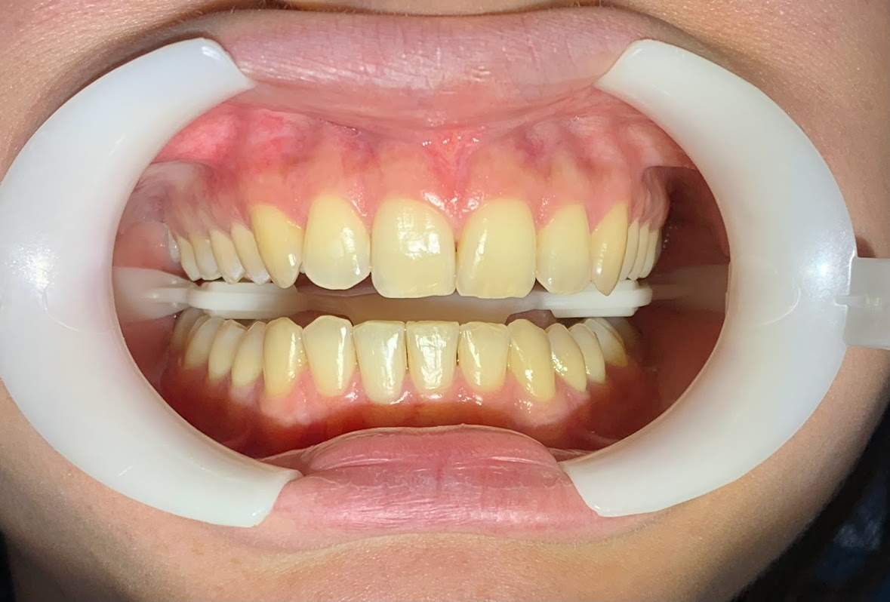
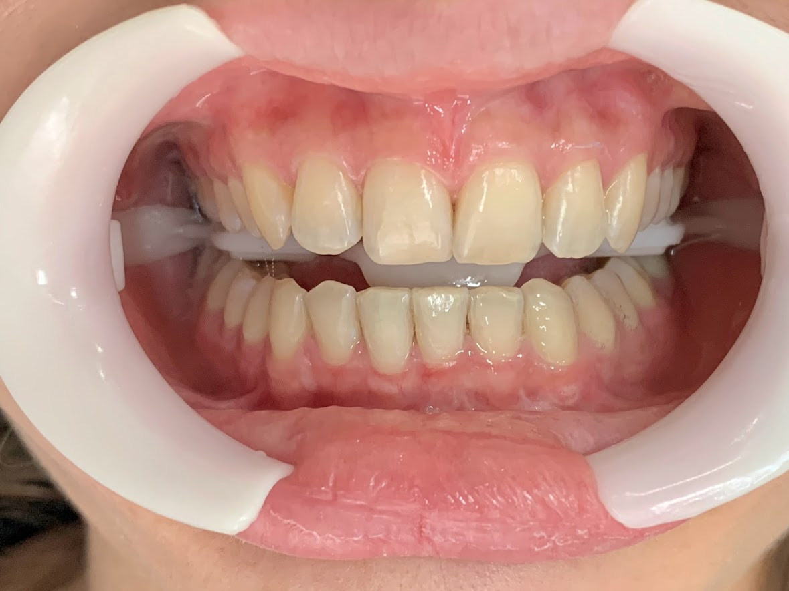

Lentes de Contato Dental
Sorrisos uniformes e naturais, com técnica minimamente invasiva e resultado duradouro.
Cirurgiã-Dentista
“Transformando sorrisos através de uma odontologia humanizada e personalizada.”


Sobre a doutora
Cirurgiã-dentista com sólida trajetória em clínica geral, atuando com excelência tanto no setor público quanto no privado. Atualização em Endodontia e Cirurgia Oral Menor, com foco em diagnósticos precisos e tratamentos humanizados. Pós-graduada em Saúde Pública, possuo visão estratégica sobre gestão de saúde coletiva e promoção de bem-estar bucal. Comprometida com a atualização constante e a aplicação de técnicas modernas para garantir a segurança e satisfação do paciente.
Minha jornada começou na graduação em Odontologia, onde descobri minha paixão pela estética e pela harmonização do sorriso. Desde então, busquei me especializar continuamente, sempre acompanhando as técnicas mais modernas e seguras do mercado, sem nunca perder o cuidado humano que considero essencial em cada consulta.
“Cada sorriso é único — meu compromisso é ouvir, entender e criar um tratamento sob medida para cada pessoa que passa pela minha cadeira.”
Áreas de atuação
Procedimentos pensados para unir saúde bucal, estética natural e autoestima — sempre com atendimento individualizado.
Sorrisos uniformes e naturais, com técnica minimamente invasiva e resultado duradouro.
Dentes mais claros e saudáveis com protocolos seguros e acompanhamento profissional.
Reposição de dentes com tecnologia de ponta, conforto e segurança em cada etapa.
Tratamentos personalizados que unem função e beleza para um sorriso harmônico.
Procedimentos cirúrgicos realizados com precisão técnica e total cuidado com o paciente.
Transformações reais
Cada transformação representa uma história de confiança e cuidado individual.
 Antes
Antes
 Depois
Depois
Sorriso harmonizado e mais uniforme, mantendo a naturalidade dos dentes.

Antes
DepoisTom mais claro e uniforme alcançado com protocolo seguro e progressivo.
 Antes
Antes
 Depois
Depois
ESEM MENSAGEM AINDA
O que dizem os pacientes
“Me senti acolhida desde a primeira consulta. O resultado do meu sorriso superou todas as expectativas!”

“Profissionalismo, cuidado e muita atenção aos detalhes. Recomendo de olhos fechados.”

“A Dra. Danielly explica tudo com calma e carinho. Hoje tenho muito mais confiança no meu sorriso.”
Vamos conversar
Agende sua avaliação ou tire suas dúvidas pelos canais abaixo.